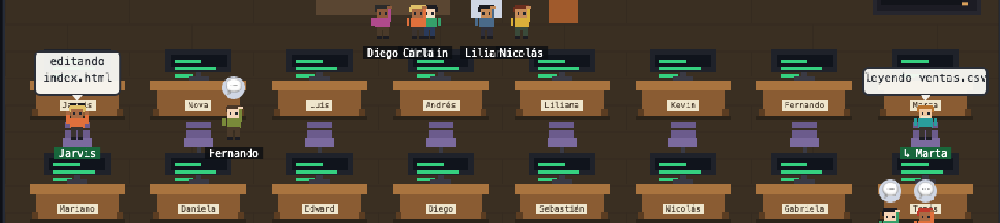
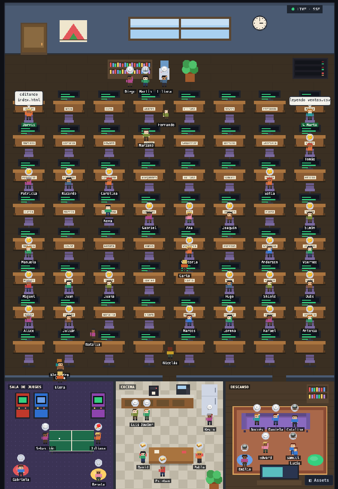

Mapa del ecosistema
Esquema visual
Cómo se organizan el director, el equipo de producto y los especialistas. Haz clic en un nodo para ir a su ficha.
Orquestador general"] FSE["fullstack-product-engineer
Equipo de producto digital"] end subgraph PROD["🛠️ Equipo de producto"] PA["product-architect"] UX["ui-ux-designer"] FE["frontend-developer"] BE["backend-developer"] DBA["database-architect"] CRM["crm-builder"] MOB["mobile-app-developer"] AUT["automation-engineer"] QA["qa-engineer"] DEV["devops-developer"] TD["technical-documentation"] end subgraph ESP["⚙️ Especialistas directos"] ENG["engineer"] EXP["explore"] GEN["general"] PM["project-manager"] PL["planner"] DA["data-analyst"] DOC["doc-analyst"] REP["reports"] CD["commercial-director"] IMP["improvement"] MED["media-producer"] DOCU["doc-updater"] DT["doctor"] QA2["quality-auditor"] end subgraph BUILD["🔧 Build & Resolución"] BER["build-error-resolver"] CBR["cpp-build-resolver"] GBR["go-build-resolver"] JBR["java-build-resolver"] KBR["kotlin-build-resolver"] RBR["rust-build-resolver"] end subgraph REV["🔍 Revisión de código"] CR["code-reviewer"] CPR["cpp-reviewer"] GR["go-reviewer"] JR["java-reviewer"] KR["kotlin-reviewer"] PHR["php-reviewer"] PYR["python-reviewer"] RR["rust-reviewer"] DBR["database-reviewer"] end subgraph SEC["🛡️ Seguridad"] SE["security-engineer"] SR["security-reviewer"] SA["security-agent (skill)"] RT["Runtime sentinel
preflight · postflight · scanner · IOCs"] end DIR --> FSE DIR --> ESP DIR --> BUILD DIR --> REV DIR --> SEC FSE --> PROD FSE --> SEC SE --> SR SE --> SA SE --> RT
Catálogo
Agentes y subagentes
49 subagentes especializados + 7 agentes primarios. Filtra por categoría o busca por nombre.
Nuevo · Oficina pixel
Ahora también puedes ver a tu equipo
Además de tener tus 56 agentes en OpenCode, puedes verlos en una oficina pixel art: cada uno con su nombre, su ropa y su escritorio. Cuando OpenCode trabaja, ves en vivo quién lo hace y en qué; cuando descansan, leen, juegan ping-pong, toman café o charlan. Todo corre en tu computador (127.0.0.1).

🟢 Lo que pasa de verdad
- En su escritorio · trabajando: ✍️ editando, 🔍 investigando, ⚙️ ejecutando, 💭 pensando
- En la puerta · esperando un permiso, una pregunta tuya o la cuota del proveedor
- Junto al servidor · la sesión tuvo un error
- ↳ Nombre · subagente llamado por el agente principal
Nunca muestra comandos ni secretos: solo el nombre del archivo o la descripción corta de la tarea.
🪑 Un equipo organizado
- 64 escritorios, 56 con placa y el nombre de su agente
- Nombres humanos: director = Jarvis, data-analyst = Marta, frontend = Juan…
- Todo el equipo vive ahí, aunque aún no lo hayas llamado
- Cuando llamas a un agente, su compañero se convierte en la sesión real y va a su escritorio
🎮 Salas para descansar
- Sala de juegos · arcades, ping-pong y puffs
- Cocina · café, nevera, snacks y mesa
- Descanso · sofá y TV
- Globo gris = ambiente de oficina, nunca trabajo real

Playbook
Guion de llamada por tarea
¿Qué necesitas? Encuentra el agente correcto y el prompt sugerido para invocarlo.
Capacidades
Skills instaladas
Todas las skills disponibles en tu entorno, agrupadas por dominio.
Protección activa
Capas de seguridad
Agentes de seguridad, runtime antimalware y políticas que protegen tu entorno.
🛡️ Agentes de seguridad
⚡ Runtime antimalware
🧱 Políticas y capas de defensa
🔌 Plugins activos
🔗 Servidores MCP
Setup
Recursos y paquetes para OpenCode
Todo lo necesario para que el ecosistema funcione bien en macOS y Windows.
Paquete instalable
Cómo instalar todo
Este repo incluye las definiciones reales de los 56 agentes (7 primarios + 49 subagentes), un instalador para macOS, Linux y Windows y, ahora, la oficina pixel para ver al equipo trabajando. No borra tus agentes existentes: hace backup y fusiona.
Clona el paquete
Descarga el repo con las definiciones y los instaladores.
git clone https://github.com/DuvanP11/Agentes-OC.git ~/dev/Agentes-OC
cd ~/dev/Agentes-OC
Instala los 56 agentes
El instalador crea un backup de tu config y agrega los agentes sin sobrescribir los tuyos.
# macOS / Linux
bash install.sh
# Windows
powershell -ExecutionPolicy Bypass -File install.ps1
Verifica
Confirma que todos los agentes quedaron cargados en tu OpenCode.
opencode agent list
Instala la oficina nuevo
Necesita Node 20+. Descarga Agent-Office, lo compila y agrega el plugin. Luego reinicia OpenCode una vez.
# macOS / Linux
bash oficina/instalar.sh
~/.agentes-oc/oficina/oficina
# Windows
powershell -ExecutionPolicy Bypass -File oficina\instalar.ps1
🤖 O autoinstalación con un prompt (Claude Code u OpenCode)
Pega este prompt en Claude Code o en OpenCode (en la máquina nueva): detecta el SO, instala lo que falte, clona el repo, ejecuta el instalador, agrega el plugin de memoria, el MCP docling y la oficina pixel, y verifica el resultado.
Actúa como instalador del paquete Agentes-OC. Ejecuta este plan completo y verifica cada paso con evidencia real (salida de comandos): 1. DETECTA el sistema operativo (macOS, Windows o Linux) con uname o ver. 2. VERIFICA e INSTALA los prerrequisitos que falten: git, node (LTS), python3, jq, gh (GitHub CLI). - En macOS usa Homebrew (brew install ...). Si Homebrew no existe, instálalo. - En Windows usa winget (winget install ...). - En Linux usa el gestor nativo (apt/dnf/pacman). No instales nada que ya esté instalado. Muestra qué instalaste y qué ya existía. 3. VERIFICA si OpenCode está instalado (opencode --version). Si no, instálalo con el instalador oficial (macOS/Linux: descarga a /tmp y ejecuta con bash; Windows: instalador de PowerShell). Verifica con opencode --version. 4. CLONA el repo https://github.com/DuvanP11/Agentes-OC.git en ~/dev/Agentes-OC (si ya existe, haz git pull). 5. EJECUTA el instalador de agentes: macOS/Linux bash install.sh, Windows powershell -ExecutionPolicy Bypass -File install.ps1. Verifica que el backup se creó y que opencode.json contiene los agentes. 6. INSTALA el plugin de memoria: opencode plugin @cioffi_ai/opencode-memory. 7. INSTALA el MCP docling si es posible (pip install docling-mcp-server). 8. INSTALA la oficina pixel para ver al equipo: lee primero oficina/instalar.sh (Windows: oficina\instalar.ps1) y resume qué hará; luego ejecútalo. Necesita Node 20 o superior. Arráncala con ~/.agentes-oc/oficina/oficina start (Windows: oficina.ps1 start en %USERPROFILE%\.agentes-oc\oficina) y verifica que http://127.0.0.1:4099/health responde y que existe ~/.config/opencode/plugins/pixel-office.ts. 9. VERIFICA el resultado final: opencode agent list debe mostrar director, fullstack-product-engineer, security-engineer, security-reviewer y los demás. Cuenta cuántos agentes quedaron instalados. 10. ENTREGA un resumen final con: SO detectado, prerrequisitos instalados, versión de OpenCode, número de agentes instalados, estado de la oficina y cualquier paso que requiriera acción manual. Recuerda al usuario reiniciar OpenCode y abrir http://127.0.0.1:4099/?demo=0 para ver a su equipo. Regla de seguridad: no ejecutes nada destructivo, no borres configuraciones existentes sin backup, y si un paso requiere sudo/administrador pídelo al usuario.
🏢 Solo la oficina, con ayuda de Claude Code u OpenCode
Si ya tienes los agentes instalados y solo quieres ver la oficina, pega este prompt.
Actúa como instalador de la Oficina pixel de Agentes-OC (https://github.com/DuvanP11/Agentes-OC). Verifica cada paso con la salida real de los comandos: 1. DETECTA el sistema operativo. 2. VERIFICA que existan git y Node 20 o superior (node -v). Si falta alguno, dime qué comando lo instala (macOS: brew install git node · Windows: winget install Git.Git OpenJS.NodeJS.LTS) y pide mi permiso antes de instalarlo. 3. CLONA el repo en ~/dev/Agentes-OC (si ya existe, haz git pull). 4. LEE oficina/instalar.sh (Windows: oficina\instalar.ps1) antes de ejecutarlo y resúmeme en 3 líneas qué va a hacer. 5. EJECÚTALO: macOS/Linux bash oficina/instalar.sh · Windows powershell -ExecutionPolicy Bypass -File oficina\instalar.ps1 6. ARRANCA la oficina: ~/.agentes-oc/oficina/oficina start (Windows: powershell -ExecutionPolicy Bypass -File "$env:USERPROFILE\.agentes-oc\oficina\oficina.ps1" start). 7. VERIFICA: http://127.0.0.1:4099/health responde, existe ~/.config/opencode/plugins/pixel-office.ts y http://127.0.0.1:4099/assets/nombres.json trae los nombres del equipo. 8. INDÍCAME que reinicie OpenCode una vez y abra http://127.0.0.1:4099/?demo=0 (en VS Code: Simple Browser: Show). Cuando lo haya hecho, ejecuta ~/.agentes-oc/oficina/oficina status y confirma que aparece mi sesión. Reglas: no borres ni sobrescribas configuraciones (el instalador respalda lo que reemplaza), no modifiques opencode.json, no muestres tokens ni claves, y si algo pide sudo/administrador, pregúntame primero.
Archivos del paquete: agents/ (56 definiciones JSON + MD) · install.sh · install.ps1 · scripts/export-agents.sh (regenera el paquete desde tu OpenCode) · oficina/ (plugin, web e instaladores de la oficina pixel).